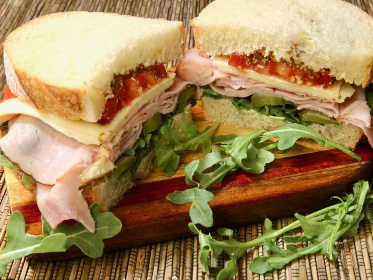

Ploughman’s Sandwich

Description
This ploughman’s sandwich recalls the classic British ploughman's cold meal, often eaten for laborers’ midday break when working in the fields. These days it’s a popular lunch served in UK pubs.
Ingredients
- 2 slices crusty bread
- 1 teaspoon butter, softened
- handful of arugula
- 2 sweet gherkin pickles, sliced
- 3 slices smoked ham
- 2 slices white Cheddar cheese
- 1 small tomato, sliced
- 1 teaspoon whole grain mustard
Steps
- Lightly butter both slices of bread.
- Layer the arugula, pickles, ham, Cheddar, and tomatoes on one slice of buttered bread. Spread the mustard on the remaining buttered bread slice, and place on top. Cut sandwich in half, and serve.
Home